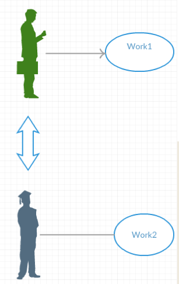

架构漫谈1
原文出处：架构漫谈（一）：什么是架构？
架构漫谈（一）：什么是架构？
架构漫谈是由资深架构师王概凯Kevin执笔的系列专栏，专栏将会以Kevin的架构经验为基础，逐步讨论什么是架构、怎样做好架构、软件架构如何落地、如何写好程序等问题。专栏的目的是希望能抛出一些观点，并引发大家思考，如果你有感触或者新的感悟，欢迎联系专栏负责人Gary（微信greenguolei）深聊。
本文是漫谈架构专栏的第一篇，作者将会通过类比的方式来介绍什么是架构以及为什么会产生架构。
缘起
一直以来，在软件行业，对于什么是架构，都有很多的争论，每个人都有自己的理解。甚至于很多架构师一说架构，就开始谈论什么应用架构、硬件架构、数据架构等等。我曾经也到处寻找过架构的定义，请教过很多人，结果发现，没有大家都认可的定义。套用一句关于big data流行的笑话，放在架构上也适用：
Architecture is like teenage sex，everybody talks about it，nobody really knows what is it。
事实上，架构在软件发明时的N多年以前，就已经存在了，这个词最早是跟随着建筑出现的。所以，我觉得有必要从源头开始，把架构这个概念先讨论清楚，只有这样，软件行业架构的讨论才有意义。
什么是架构？
架构的英文是Architecture，在Wikipedia上，架构是这样定义的：
Architecture (Latin architectura, from the Greek ἀρχιτέκτων arkhitekton"architect", from ἀρχι- "chief" and τέκτων "builder") is both the process and the product of planning, designing, and constructing buildings and other physical structures。
从这个定义上看，架构好像是一个过程，也不是很清晰。为了讲清楚这个问题，我们先来看看为什么会产生架构。
为什么会产生架构？
想象一下，在最早期，每个人都完全独立生活，衣、食、住、行等等全部都自己搞定，整个人类都是独立的个体，不相往来。为了解决人类的延续的问题，自然而然就有男女群居出现，这个时候就出现了分工了，男性和女性所做的事情就会有一定的分工，可是人每天生活的基本需求没有发生变化，还是衣食住行等生活必须品。
但是一旦多人分工配合作为生存的整体，力量就显得强大多了，所以也自然的形成了族群：有些人种田厉害，有些人制作工具厉害，有些地方适合产出粮食，有些地方适合产出棉花等，就自然形成了人的分群，地域的分群。当分工发生后，实际上每个人的生产力都得到了提高，因为做的都是每个人擅长的事情。
整个人群的生产力和抵抗环境的能力都得到了增强。为什么呢？因为每个人的能力和时间都是有限的，并且因为人的结构的限制，人同时只能专心做好一件事情，这样不得已就导致了分工的产生。既然分工发生了，原来由一个人干生存所必需的所有的事情，就变成了很多不同分工的角色合作完成这些事情，这些人必须要通过某些机制合在一起，让每个人完成生存所必需的事情，这实际上也导致了交易的发生（交易这部分就不在这里展开了，有机会再讨论）。
在每个人都必须自己完成所有生活必须品的生产的时候，是没有架构的（当然在个人来讲，同一时刻只能做有限的事情，在时间上还是可能会产生架构的）。一旦产生的分工，就把所有的事情，切分成由不同角色的人来完成，最后再通过交易，使得每个个体都拥有生活必须品，而不需要每个个体做所有的事情，只需要每个个体做好自己擅长的事情，并具备一定的交易能力即可。
这实际上就形成了社会的架构。那么怎么定义架构呢？以上面这个例子为例，把一个整体（完成人类生存的所有工作）切分成不同的部分（分工），由不同角色来完成这些分工，并通过建立不同部分相互沟通的机制，使得这些部分能够有机的结合为一个整体，并完成这个整体所需要的所有活动，这就是架构。由以上的例子，也可以归纳出架构产生的动力：
-
必须由人执行的工作（不需要人介入，就意味着不需要改造，也就不需要架构了）
-
每个人的能力有限（每个人都有自己的强项，个人的产出受限于最短板，并且由于人的结构限制，同时只能专注于做好一件事情，比如虽然有两只眼睛，但是只能同时专注于一件事物，有两只手，无法同时做不同的事情。ps. 虽然有少部分人可以左手画圆右手画框，但是不是普遍现象）
-
每个人的时间有限（为了减少时间的投入，必然会导致把工作分解出去，给擅长于这些工作的角色来完成，见2，从而缩短时间）
-
人对目标系统有更高的要求（如果满足于现状，也就不需要进行架构了）
-
目标系统的复杂性使得单个人完成这个系统，满足条件2，3（如果个人就可以完成系统的提高，也不需要别的人参与，也就不需要架构的涉及，只是工匠，并且一般这个工作对时间的要求也不迫切。当足够熟练之后，也会有一定的架构思考，但考虑更多的是如何提高质量，提高个人的时间效率）
有人可能会挑战说，如果一个人对目标系统进行分解，比如某人建一栋房子，自己采购材料，自己搭建，难道也不算架构嘛？如果对于时间不敏感的话，是会出现这个情况的，但是在这种情况下，并不必然导致架构的发生。如果有足够的自觉，以及足够的熟练的话，也会产生架构的思考，因为这样对于提高生产力是有帮助的，可以缩短建造的时间，并会提高房子的质量。事实上建筑的架构就是在长期进行这些活动后，积累下来的实践。
当这5个条件同时成立，一定会产生架构。从这个层面上来说，架构是人类发展过程中，由懵懵懂懂的，被动的去认识这个世界，变成主动的去认识，并以更高的效率去改造这个世界的方法。以下我们再拿建筑来举例加强一下理解。
最开始人类是住在山洞里，住在树上的，主要是为了躲避其他猛兽的攻击，以及减少自然环境的变化，对人类生存的挑战。为了完成这些目标，人类开始学会在平地上用树木和树叶来建立隔离空间的设施，这就是建筑的开始。但是完全隔离也有很多坏处，慢慢就产生了门窗等设施。
建筑的本质就是从自然环境中，划出一块独占的空间，但是仍然能够通过门窗等和自然环境保持沟通。这个时候架构就已经开始了。对地球上的空间进行切分，并通过门窗，地基等，保持和地球以及空间的有机的沟通。当人类开始学会用火之后，茅棚里面自然而然慢慢就会被切分为两部分，一部分用来烧饭，一部分用来生活。当人的排泄慢慢移入到室内后，洗手间也就慢慢的出现了。这就是建筑内部的空间切分。
这个时候人们对建筑的需求也就慢慢的越来越多，空间的切分也会变成很多种，组合的方式也会有很多种，比如每个人住的房子，群居所产生的宗教性质的房子，集体活动的房子等等。这个时候人们就开始有意识的去设计房子，架构师就慢慢的出现了。一切都是为了满足人的越来越高的需求，提升质量，减少时间，更有效率的切分空间，并且让空间之间更加有机的进行沟通。这就是建筑的架构以及建筑的架构的演变
总结一下，什么是架构，就是：
- 根据要解决的问题，对目标系统的边界进行界定。
- 并对目标系统按某个原则的进行切分。切分的原则，要便于不同的角色，对切分出来的部分，并行或串行开展工作，一般并行才能减少时间。
-
并对这些切分出来的部分，设立沟通机制。
-
根据3，使得这些部分之间能够进行有机的联系，合并组装成为一个整体，完成目标系统的所有工作。
同样这个思考可以展开到其他的行业，比如企业的架构，国家的架构，组织架构，音乐架构，色彩架构，软件架构等等。套用三国演义的一句话，合久必分，分久必合。架构实际上就是指人们根据自己对世界的认识，为解决某个问题，主动地、有目的地去识别问题，并进行分解、合并，解决这个问题的实践活动。架构的产出物，自然就是对问题的分析，以及解决问题的方案：包括拆分的原则以及理由，沟通合并的原则以及理由，以及拆分，拆分出来的各个部分和合并所对应的角色和所需要的核心能力等。
</div>
原文出处：架构漫谈（二）：认识概念是理解架构的基础
架构漫谈（二）：认识概念是理解架构的基础
架构漫谈是由资深架构师王概凯Kevin执笔的系列专栏，专栏将会以Kevin的架构经验为基础，逐步讨论什么是架构、怎样做好架构、软件架构如何落地、如何写好程序等问题。专栏的目的是希望能抛出一些观点，并引发大家思考，如果你有感触或者新的感悟，欢迎联系专栏负责人Gary（微信greenguolei）深聊。
本文是漫谈架构专栏的第二篇，作者通过几个例子，讨论了一下认识概念的误区，如何有效的去认识概念，明白概念背后的含义，以及如何利用对概念的理解，快速的进行学习。
在前一篇文章中，我们讨论了什么是架构。事实上，这些基础概念对于做架构是非常重要的，大部分人对于每天都习以为常的概念，都自以为明白了，但实际上都是下意识的，并不是主动的认识。比如说“什么是桌子？”，做培训的时候，我经常拿这个例子来问大家，回答千奇百怪。这实际上就导致了做架构的时候，不同角色的沟通会出很多问题，那么结果也就可想而知了。
如前一篇所说，架构实际上解决的是人的问题，而概念是人认识这个世界的基础，自然概念的认识就非常的重要。这篇文章尝试讨论一下，如何去认识概念。当然这篇不是语言学的文章，我这里所讨论的，和语言学可能不太一样，如果大家对语言学感兴趣，也可以去参考一下。
首先我要先声明一下，这一系列的文章，都是以人的认识为主体去讨论的，解决的都是人的问题，任何没有具体申明的部分，都隐含这一背景，以免大家误解。
概念也属于人认识这个世界并用来沟通的手段，包括“概念”这个概念，也是一样的。在古代，不叫“概念”，称之为“名相”。
何为相？
一般我们认为：看到一个东西，比方说杯子，“杯子”就是一个名字，指代的看到的东西就是相，就是事物的相状。我们一听到“杯子”这个词，脑海里就会浮现出一个杯子的形象。而“杯子”这个词，是用来指代的是这个相状的，叫做名。合起来就叫做“名相”。
可是当我们把杯子打碎了的时候，我们还会称这个碎了的东西叫杯子吗？ 肯定不会，一般会叫“碎瓦片”，如果我们把碎瓦片磨碎了呢，名字又变了，叫做“沙子”。这就奇怪了，同样一个东西，怎么会变出这么多的名字出来？
那究竟什么才是相？
实际上“相“表达的不是一个具体的东西，如上面所提的一个瓷器杯子，并不是指这个瓷器，而是这个瓷器所起的一个作用：一手可握，敞口（一般不超过底的大小，太大口就叫碗了），并且内部有一个空间可乘东西的这么一个作用。并不是指这个瓷器本身。这也是为什么我们从电视上看到一个人拿杯子的时候，我们知道这个是杯子。但是实际上我们看到的都是光影而已。所以说相实际上代表的是这个作用，并不是具体的某个东西，而名是用来标识这个作用的，用来交流的。
为何需要这个作用？
这个作用其实是为了解决“人需要一个可单手持握，但是希望避免直接接触所盛物体”这个问题。
所以说，每个概念实际上所解决的，还是人遇到的某个特定的问题，我们把解决问题的解决方案，给定了一个名字，这个名字就是对应的某个特定的概念。对于概念这个词本身，为了统一指代这些名字，我们称起这类作用的名字称为“概念”。我们上次讨论的“架构”也是是同样的一个特定概念，这里不再详述。同样，什么是“建筑”？ “建筑”实际上解决的就是“人需要独占的空间，并还能够比较流畅的和外部世界沟通”的问题。
再拿前面的“桌子”来举例，什么叫“桌子”？ 很多人回答，四条腿，或者说有腿，有一个平面，等等，柜子不也是这样吗？为什么我们看到柜子，不会认为是桌子呢？即使我们放在柜子上吃饭，我们看到仍然会问，为什么在柜子上吃饭？ 不会叫桌子。如果明白了上面的道理，就很简单了，桌子实际上是为了解决人坐在椅子上，手还能够支撑在一个平面上继续开展活动的问题，一般会和椅子配对出现。坐在椅子上工作，对着柜子有一个很严重的问题--不知道大家试过没有--就是腿无法展开的问题。当这么坐着超过半小时就知道是什么痛苦了。所以桌子的平面下方一定会有一个足够容纳膝部和小腿的空间，来解决这个问题。解决了这些问题的装置，才能称之为桌子。
类似也可以定义出来椅子，由此可见，桌子和椅子的高度也是有限定的，都是是解决人的问题，要符合人的身高：椅子的高度和深度，必须符合小腿和大腿的长度；椅背的高度要配合脊柱的高度；桌子的高度要配合小腿和脊柱的高度之和；成人和小孩的自然也就有区别了。这又变成生理学了，事实上要做好桌子和椅子，必须要理解人的生理结构，才能正确的理解桌子和椅子的概念。
同理，为何我们可以在不同的语言间进行翻译，是因为虽然语言不同，但是人类所面临的的问题是一样的，所使用的名不同而已。对于不同的动物之间的翻译也是同理。
关于抽象
在讨论桌子这个概念的过程中，很多人会提出抽象这个概念，认为定义桌子实际上就是抽象的一个过程。这里，我觉得有必要要澄清一下抽象这个概念，我认为这个里面有误解。我注意到，在做架构师的群体中，不谈抽象好像就不是一个合格的架构师。
抽象这个词代表的含义，实际上是把不同的概念的相似的部分合并在一起，形成一个新的概念。这个里面问题很多：首先“相似的部分”在不同的人看来，并不一定那么相似；其次，抽象之后形成的是一个新的概念，和原来那个概念并不一样，所解决的问题也不一样。所以我们不能用抽象来定义一个事物，抽象实际上是一个分类的过程，完全是另一码事。再举一个例子，杯子和容器，很多人认为容器是杯子的抽象，但是实际上杯子是杯子，容器是容器，它们所解决的问题是不一样的。当我们需要解决装东西的问题的时候，会说容器；当我们需要解决单手持握要装东西的时候，会说要一个杯子。
回过头来，根据架构的定义，要做好架构所首先必须具备的能力，就是能够正确的认识概念，能够发现概念背后所代表的问题，进而才能够认识目标领域所需要解决的问题，这样才能够为做好架构打好基础。事实上，这一能力，在任何一个领域都是适用的，比如我们如果想要学习一项新的技术，如Hibernate、Spring、PhotoShop、WWW、Internet等等，如果知道这些概念所要解决的问题，学习这些新的技术或者概念就会如虎添翼，快速的入手；学习一个新的领域，也会非常的快速有效；使用这些概念来解释问题，甚至发明新的概念都是很容易的事。为什么强调这个呢，因为做架构的时候，很多时候都是在一个新的领域解决问题，必须要快速进入并掌握这个领域，然后才能够正确的解决问题。
以上通过几个例子，讨论了一下认识概念的误区，如何有效的去认识概念，明白概念背后的含义，以及如何利用对概念的理解，快速的进行学习。掌握了这些原则，会有利于帮助我们在架构阶段，快速的识别和定位问题。
下一篇我们会来讨论一下，如何快速的定位和识别问题，这是架构的起始。
</div>
原文出处：架构漫谈（三）：如何做好架构之识别问题
架构漫谈（三）：如何做好架构之识别问题
按照之前架构的定义，做好架构首先需要做的就是识别出需要解决的问题。一般来说，如果把真正的问题找到，那么问题就已经解决了80%了。这个能力基本上就决定了架构师的水平。
那么面对问题有哪些困难呢?
我们先看一则笑话。女主人公：老公，把袋子里的土豆切一半下锅。结果老公是把袋子里的每个土豆都削了一半，然后下锅。
当然很多人会说，这个是沟通问题，然后一笑了之。其实，出现这个现象是由于我们大部分时候过于关注解决问题，急于完成自己的工作，而不关心“真正的问题是什么”而造成的。当我们去解决一个问题的时候，一定要先把问题搞清楚。这也是我为什么要单独写一篇文章讲这个的原因。去看看软件开发工作者的时间分配也可以看出，大家大部分时间花在讨论解决方案和实现的细节上，基本都不会花时间去想“问题是什么”。或者即使想了一点点，也是一闪而过，凭自己的直觉下判断。只有真正投入思考问题是什么的工程师，才可能会真正的成长为架构师
以这个笑话为例，看看在我们处理问题的时候，都会犯什么样的错误：
- 被告知要处理一个问题，但是交过来的实际上是一个解决方案，不是问题本身
- 被告知要处理一个问题，直接通过直觉就有了一个解决方案，马上考虑解决方案如何落地，或者有几种解决方案，选哪个合适
那么如何识别问题呢?
所有的概念基本都有一个很大的问题，就是缺乏主语。而我们大家都心照不宣的忽略这个主语，沟通的时候也都以为大家都懂得对方说的主语是谁，结果大家都一起犯错误。识别问题的一个最大的前提就是要搞清楚：是谁的问题。这个搞清楚了，问题的边界也就跟着确定了，再去讨论问题才有意义。
以上面切土豆的例子来分析：
- 女主人提出一个问题，要切土豆下锅煮。
- 男主人有一个问题，女主人交代了自己必须要完成的一个任务。
每个人都是优先处理自己的问题，自然就选择了2，完成了这个任务。这也是大部分软件工程师处理的方式，以自己认为对的方式完成自己的问题，没什么不对啊，也难怪能得到我们的共鸣。这个里面犯的错误是什么呢?
-
女主人公提出的实际上是解决方案，而不是烧土豆这个问题本身。女主人当时执行这个解决方案可能有困难，就把执行解决方案作为一个任务，委托给了男主人。
-
男主人得到了一个任务，尽心尽职地把这个任务完成了。
最后的结果是什么呢，每个人都做了很多工作，每个人都认为自己做的是对的，因此没有一个人对结果满意。因为真正的问题没有被发现，自然也就没有被解决，那么后续还得收拾残局，还要继续解决问题。事实上自己的工作并没有完成，反而更多了。把原因归结为沟通问题也是可以的，但对于解决问题似乎并没有太多的帮助。因为要改进沟通，这也是一个大问题。搞明白目标问题“是谁的问题，是什么问题”，当然也是需要沟通的。为了帮助自己更快的搞明白，首先要做的事是问正确的问题。架构师应该问的第一个正确的问题就是：目标问题是谁的问题。
当我们处理问题的时候，如果发现自己正在致力于把自己的工作完成，要马上警惕起来，因为这样下去会演变成没有ownership的工作态度。在面对概念的时候，也会不求甚解，最终会导致没有真正的理解概念。
作为软件工程师或者架构师，我们大部分时候是要去解决别人的问题，“别人”是谁，是值得好好思考的。在这个故事里面，男主人要解决的，实际上是这个家庭晚餐需要吃土豆的问题，目标问题的主体实际上是这个家庭的成员。
明白了问题的主体，这个主体就自然会带来很多边界约束，比如土豆是要吃的，要给人吃的，而且还是要给自己的家人吃的。“切土豆下锅”这个问题，因为识别了问题的主体，自然而然的就附带了这么多的信息。后续如何煮，是否放高压锅煮，放多少水，煮多长时间等等，就自然而然能够问出来其他问题来了，说不定还能够识别出来，女主人给的这个解决方案可能是有问题的。这个时候才算是真正的明白了问题。可以想象，这样下去最后的结果一定是大家都满意的，因为真正的问题解决了。只有真正明白了是谁的问题，才能够真正地完成自己的任务，真正地把自己的问题解决掉，而不是反过来。
由上面的分析可以看出，找出问题的主体，是做架构的首要问题。这也是我一再强调的，我们要解决的问题，一定都是人的问题。更进一步，架构师要解决的，基本都是别人的问题，不是自己的问题。再进一步，我们一定要明白，任何找上架构师的问题，绝对都不是真正的问题。为什么呢? 因为如果是真正的问题的话，提问题过来的人肯定都能够自己解决了，不需要找架构师。架构师都要有这个自觉：发现问题永远都比解决问题来的更加重要。
当问题的主体离架构师越远，就会让找出问题主体的过程越加困难，我们再举一个软件行业比较熟悉的例子：用户给产品经理提出要求，想要一把锤子。这是典型的拿解决方案作为问题的。真正的问题的主体是谁，是用户还是设计师还是施工队? 如果产品经理当成是自己的问题，那么毫无疑问就给了锤子了。
我们需要识别：用户究竟是二传手，还是问题的真正主体。如果是设计师，那么问题的边界就变成了设计师的问题，如果是施工队，那么问题就变成了施工队的问题，如果是用户，那么就要看看用户到底有什么困难，绝对不是要一个锤子这么简单。这也说明了，问题的主体对问题的边界确定有多么的重要。
当明白了问题的主体，我们才可能真正的认识问题是什么。因为问题的主体是问题的隐含边界，边界不确定下来，问题就是不确定的。一旦确定了主体，剩下的就是去搞明白主体有哪些问题。这个就比较直接了，常用的方式就是直接面对主体进行访谈，深入到主体的工作生活当中，体验并感受这些问题，甚至通过数据的反馈来定位问题。这个大家就比较熟悉了，我就不展开了。
一般来说，从问题暴露的点，一点点去溯源查找，一定会找出来谁的问题，以及是什么问题。最坏情况就是当我们时间或者能力有限，实在是无法定位出是谁的问题的时候，比如系统出故障，也就意味着我们无法根本解决问题。这时最好的办法就是去降低问题发生所带来的成本，尽量去隔离问题影响的范围。给我留出时间和空间去识别真正的问题。
总结一下，要正确的认识问题，需要问两个问题：
- 这是谁的问题？
- 有什么问题？
当得到的回答是支支吾吾的时候，我们就知道正确的方向在哪儿，以及需要做哪些事了。以我的经验，问题1会花比较多的时间，也是支支吾吾最多的地方，因为架构要解决的问题都是人的问题。但是一旦确定了答案，问题2就会变得非常容易。可以这样说，架构师的能力大部分会体现在问题1的识别上。
</div>
原文出处：架构漫谈（四）：如何做好架构之架构切分
架构漫谈（四）：如何做好架构之架构切分
架构漫谈是由资深架构师王概凯Kevin执笔的系列专栏，专栏将会以Kevin的架构经验为基础，逐步讨论什么是架构、怎样做好架构、软件架构如何落地、如何写好程序等问题。
本文是漫谈架构专栏的第四篇，作者将会介绍架构的切分，并直戳切分的本质其实就是利益的调整。文中作者将会讨论为什么需要切分、切分的原则、切分与建模、切分的输出和组织架构等问题。欢迎阅读和反馈。
前一篇已经讲了如何识别问题。在识别出是谁的问题之后，会发现，在大部分情况下，问题都迎刃而解，不需要做额外的动作。很多时候问题的产生都是因为沟通的误解，或者主观上有很多不必要的利益诉求导致的。但是总还有一部分确实是有问题的，需要做调整，那么就必须要有所动作，做相应的调整。这个调整就是架构的切分。
切分就是利益的调整
我们要非常的清楚，所有的切分调整，都是对相关人的利益的调整。为什么这么说呢，因为维护自己的利益，是每个人的本性，是在骨子里面的，我们不能逃避这一点。我们以第一篇文章里面的例子为例来做解释。
我们已经知道，随着社会的发展，分工是必然的，为什么呢? 这个背后的动力就是每个人自己的利益。每个人都希望能够把自己的利益最大化，比如：生活的更舒适，更轻松，更安全，占用并享有更多的东西。但是每个人的能力和时间都非常的有限，不可能什么都懂，所以自然需要舍掉一些自己不擅长的东西，用自己擅长的东西去换取别人擅长的东西。
对比一个人干所有的事情，结果就是大家都能够得到更多，当然也产生了一个互相依赖的社会，互相谁都离不开谁。这就是自然而然而产生的架构切分，背后的原动力就是人们对自己利益的渴望。人们对自己利益的渴望也是推动社会物质发展的原动力。
在这个模式下，比较有意思的是，每个人必须要舍掉自己的东西，才能够得到更多的东西。有些人不愿意和别人进行交换，不想去依赖于别人，这些人的生活就很明显的差很多，也辛苦很多，自然而然的就被社会淘汰了。如果需要在这个社会上立足，判断标准就变成了：如何给这个社会提供更好更有质量的服务。提供的更好更多的服务，自然就能够换取更多更好的生活必需品。实际上这就是我们做人的道理。
为什么需要切分？
当人们认识到要主动的去切分一个系统的时候，毫无疑问，我们不能忘掉利益这个原动力。所有的切分决策都不能够违背这一点，这是大方向。结合前一篇“识别问题”，一旦确定了问题的主体，那么系统的利益相关人（用现代管理学语言叫：stakeholder）就确定了下来。所发现的问题，会有几种情况：
- 某个或者某些利益相关人负载太重。
- 时间上的负载太重。
- 空间上的负载太重，本质上还是时间上的负载太重。
- 某个或者某些利益相关人的权利和义务不对等。
切分的原则
情况1是切分的原因，情况2是切分不合理而导致的新的问题，最终还是要回到情况1。对于情况1，本质上都是时间上的负载。因为每个人的时间是有限的，怎么在有限的时间内做出更多的事情？那么只有把时间上连续的动作，切分成时间上可以并行的动作，在空间上横向扩展。所以切分就要有几个原则：
-
必须在连续时间内发生的一个活动，不能切分。比如孕妇怀孕，必须要10月怀胎，不能够切成10个人一个月完成。
-
切分出来的部分的负责人，对这个部分的权利和义务必须是对等的。比方说妈妈10月怀胎，妈妈有权利处置小孩的出生和抚养，同样也对小孩的出生和抚养负责。为什么必须是这样呢? 因为如果权利和义务是不对等的话，会伤害每个个体的利益，分出来执行的效率会比没有分出来还要低，实际上也损害了整体的利益，这违背了提升整体利益的初衷。
-
切分出来的部分，不应该超出一个自然人的负载。当然对于每个人的能力不同，负载能力也不一样，需要不断的根据实际情况调整，这实际上就是运营。
-
切分是内部活动，内部无任怎么切，对整个系统的外部应该是透明的。如果因为切分导致整个系统解决的问题发生了变化，那么这个变化不属于架构的活动。当然很多时候当我们把问题分析的比较清楚的时候，整个系统的边界会进一步的完善，这就会形成螺旋式的进化。但这不属于架构所应该解决的问题。进化的发生，也会导致新的架构的切分。
原则2是确保我们不能违反人性，因为维护自己的利益，是每个人的本性。只有权利和义务对等才能做到这一点。从原则2的也可以推理，所有的架构分拆，都应该是形成树状的结果，不应该变成有向图，更不应该是无向图。很多人一谈架构，必谈分层，但是基本上都没意识到，是因为把一个整体分拆为了一棵树，因为有了树，才有层。
从某种意义上来说，谈架构就是谈分层，似乎也没有错，但是还是知道为什么比较好。从根节点下来，深度相同的是同一层。这个是数学概念，我就不展开了，感兴趣可以去复习一下数学。
同样我们看一个组织架构，也可以做一个粗略的判断，如果一个企业的组织架构出现了“图”，比方说多线汇报，一定是对stakeholder的利益分析出现了问题，这就会导致问题2的发生。问题2一旦出现，我们必须马上要意识到，如果这个问题持续时间长，会极大的降低企业的运作效率，对相关stakeholder的利益都是非常不利的，同样对于企业的利益也是不利的。必须快速调整相关stakeholder的职责，使得企业的组织架构成为一个完美的树状，并且使得数的层数达到尽可能的低。只有平衡数可以比较好的达到这个效果。
当然如果某个节点的能力很强，也可以达到减小树的高度的结果。技术的提升，也是可以提升每个节点的能力，降低树的层数。很多管理学都在讨论如何降低组织架构的层数，使得管理能够扁平化，原因就在于此，这里就不展开讨论了。从这里也基本可以得出一个结论，一个好的组织的领导，一定也是一个很好的架构师。
切分与建模
实际上切分的过程就是建模的过程，每次对大问题的切分都会生成很多小问题，每个小问题就形成了不同的概念。这也是系列第二篇文章尝试表达的。这些不同的概念大部分时候人们自发的已经建好了，架构师更多的是要去理解这些概念，识别概念背后所代表的的人的利益。比如人类社会按照家庭进行延续，形成了家族，由于共享一片土地资源，慢慢形成了村庄，村庄联合体，不同地域结合，形成了国家。由于利益分配的原因，形成了政权。每次政权的更迭，都是利益重新分配的动力所决定的。
同样对于一个企业也是一样的，一开始一个人干所有的事情。当业务量逐渐变大，就超过了一个人能够处理容量，这些内容就会被分解出来，开始招聘人进来，把他们组合在一起，帮助处理企业的事务。整个企业的事务，就按照原则2，分出来了很多新的概念：营销，售前，售中，售后，财务，HR等等。企业的创始人的工作就变成了如何组合这些不同的概念完成企业的工作。如果业务再继续增大，这些分出来的部分还要继续分拆，仍然要按照原则2才能够让各方达到利益最大化。如果某个技术的提升，提高了某个角色的生产力，使得某个角色可以同时在承担更多的工作，就会导致职责的合并，降低树的层数。
切分的输出和组织架构
架构切分的输出实际上就是一个系统的模型，对于一个整体问题，有多少的相关方，每个相关方需要承担哪些权利和义务，不同的相关方是如何结合起来完成系统的整体任务的。有的时候是从上往下切（企业），有的时候是从下往上合并，有的时候两者皆有之（人类社会的发展）。而切分的结果最终都会体现在组织架构上，因为我们切分的实际上就是人的利益。
从这方面也可以看出，任何架构调整都会涉及到组织架构，千万不可轻视。同样，如果对于stakeholder的利益分析不够透彻，也会导致架构无法落地，因为没有入愿意去损坏自己的利益。一旦强制去执行，人心就开始溃散。这个也不一定是坏事，只要满足原则2就能够很好的建立一个新的次序和新的利益关系，保持组织的良性发展，长久来看是对所有人的利益都有益的，虽然短期内有对某些既得利益者会有损害。
总结一下
- 架构的切分的导火索是人的负载太重。
- 架构的切分实际就是对stakeholder的利益进行切分或合并，使得每个stakeholder的权责是对等的，每个stakeholder可以为自己的利益负责。
- 架构切分的最终结果都会体现在组织架构上，只有这样才能够让架构落地并推进。
- 架构切分的结果一定是一个树状，这也是为什么会产生分层。层数越多沟通越多，效率越低，分层要越少越好。尽可能变成一颗平衡树，才能让整个系统的效率最大化。
原文出处：架构漫谈（五）：什么是软件
架构漫谈（五）：什么是软件
架构漫谈是由资深架构师王概凯Kevin执笔的系列专栏，专栏将会以Kevin的架构经验为基础，逐步讨论什么是架构、怎样做好架构、软件架构如何落地、如何写好程序等问题。
本文是漫谈架构专栏的第五篇，作者将会从自己的认知角度再次反思什么是软件，文中作者探讨了软件发展火热的根本原因以及软件扮演的角色等问题。如前几天一位架构师所说，我们并不缺架构实践，而是缺少对于架构的反思，希望这系列文章能帮你重新理解架构，重新认识软件。
前面通过四篇文章，把什么是架构，如何做好架构等必要的概念澄清了一下。这些概念对于在各种不同的领域都应该也是有用的，需要读者自行思考，并应用到自己所在的领域中。在这篇文章开始，我们用同样的思考，来看看软件是怎么回事，以及如何运用架构思维，更好的设计和实现软件。
冯诺依曼结构，图灵机，以模拟人为目标
软件的历史，实际上可以说是用机器模拟人的历史。不管大家（包括在这个历史过程中的参与者）有没有意识到，我们都有意无意的在计算机上模仿人类的行为。从冯诺依曼结构开始，程序逻辑开始脱离硬件，采用二进制编码。加上存储，配合输入输出，一个简化的大脑就出现了。图灵机则是模拟大脑的计算，用数学的方式把计算的过程定义了出来，著名的邱奇-图灵论题：一切直觉上能行可计算的函数都可用图灵机计算，反之亦然。软硬件两者一结合，一个可编程的大脑出现了，这也是现在为什么我们把计算机叫做电脑。在硬件上编写出的程序，就是软件，是用来控制硬件的行为的。
成本为王
在初期，软件使用二进制编写的，从硬件到软件，成本都非常的高。随着半导体技术的进步，硬件的成本越来越低，性能越来越高，甚至出现了摩尔定律：当价格不变时，集成电路上可容纳的元器件数目，约每隔18-24个月增加一倍，性能提升一倍。软件方面，为了简化难度，开始采用汇编，进一步出现了类似于人类的语言的高级语言，比如C/C++/Java等，这使得人类可以用类似于人的语言来和计算机沟通。软件工程师慢慢越来越多，开发软件的成本也越来越低。计算机就好像是一个只需要电，不需要休息的人，可以无休无止的工作。
人们越来越愿意把原来只有人才能做的事情，交给计算机来做。结果就导致软件越来越丰富，能够做的事情也越来越多，成本也越来越低。可以这么说，成本是我们为什么采用软件的主要动力，可以节省大量的人员培训，减少雇员的数目。随着互联网的发展，人类社会也开始软件化了。原来必须实体店来进行售卖的，搬到互联网上，开店成本更低，并且能够接触到更多的人。想象一下，一个门店每天的人流达到百万级别是很恐怖的，由实体空间大小来决定。但是在互联网上，访问量千万级别都不算什么。最终的结果就变成，每个人能够负担的工作越来越多，成本越来越低。这也是为什么软件这么热的原因。
软件扮演的角色
随着软件的规模的变大，做好一个软件也变得越来越难了。早期的程序员写程序，主要是为了帮助自己研究课题。这些程序员熟练了之后，提高了自己的生产力，并发现还可以帮助别人写程序，慢慢软件就变成了一个独立的行业。程序从早期由一个人完成，也逐渐变成了由很多不同角色的人共同合作来完成。以下讨论的前提，都是基于帮助别人写程序，多人合作的基础上的。结论对于单人为自己写程序也适用。
在没有软件之前，每个人干自己的工作，自行保存自己的工作结果。人们面对面或者通过电话等沟通，如下图所示。

有了软件之后，实际上，我们是把我们日常生活中所做的事情，包括我们自己本人都一起虚拟化到了计算机中。而人则演化成了，通过计算机的输入输出设备，控制计算机中的自己，来完成日常的工作，以及与其他人的沟通。也就是说，软件一直以来的动力，始终都是来模拟人和这个社会的。比如模拟大气运动（天气预报），模拟人类社会（互联网社交），模拟交易，包括现在正在流行的VR，人工智能等等。模拟的对象越来越高级，难度越来越大。
不管如何发展，模拟人的所有行为都是一个大的趋势。也就是说，软件的主要目的，还是把人类的生活模拟化，提供更低成本，高效率的新的生活。从这个角度来看，软件主要依赖的还是人类的生活知识。软件更多的是扮演一个cost center，这也是为什么会出现很多的软件代工。
{kind=link}
软件开发的架构演变
软件工程师是实现这个模拟过程的关键人物，他必须先理解人是怎么在日常生活中完成工作的，才能够很好的把这些工作在计算机中模拟出来。可是软件工程师需要学习大量的计算机语言和计算机知识，还需要学习各行各业的专业知识。软件工程师本身的培养就比较难，同时行业知识也要靠时间的积累，这样就远远超出了软件工程师的能力了。所以软件开发就开始有分工了，行业知识和业务的识别，会交给BA，系统的设计会交给架构师，设计的实现交给架构师，实现的检验交给测试，还有很多其他角色的配合。为了组织这些角色的工作，还有项目经理。这就把原来一个人的连续工作，拆分成了不同角色的人的连续配合，演化成了不同的软件开发的模式。然后慢慢演变出专门为别人开发软件的软件公司。
软件架构的出现
如同前面描述的架构的定义，软件架构的出现也是同样的。一开始是懵懵懂懂的去写软件，后来慢慢的就有意识的去切分，演变成了不同的架构。这个背后的动力也是一样的，就是提升参与的人的利益，降低成本。导火索也是软件工程师的任务太重，我们需要把很多工作拆分出来。拆分的原则也是一样的，如何让权责一致。同样，这个拆分也是需要组织架构的调整，来保证架构的落地。具体如何分拆，如何调整，我们将在另外一篇中着重讨论。
以上通过简单的描述计算机和软件的发展历史，阐明软件的本质，其实就是通过把人类的日常工作生活虚拟化，减少成本，提升单个人员的生产力，提升人类自己的利益。软件工程师的职责在这个浪潮中，不堪重负，自然而然就分拆为不同的角色，形成了一个独特的架构体系。这一切的背后，仍然是为了提升人类自己的利益，解决人类自己的问题。
</div>